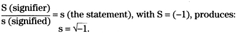
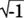
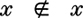
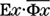
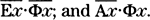
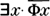
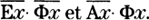

2. Jacques Lacan
Lacan finally gives Freud’s thought the scientific concepts it requires.
—Louis Althusser, Écrits sur la psychanalyse (1993, p. 50)
Lacan is, as he himself says, a crystal-clear author.
—Jean-Claude Milner, L’œuvre claire (1995, p. 7)
Jacques Lacan was one of the most famous and influential psychoanalysts of this century. Each year, dozens of books and articles are devoted to the analysis of his work. According to his disciples, he revolutionized the theory and practice of psychoanalysis; according to his critics, he is a charlatan and his writings are pure verbiage. We shall not enter here into the debate concerning the purely psychoanalytic part of Lacan’s work. Rather, we shall limit ourselves to an analysis of his frequent references to mathematics, and show that Lacan illustrates perfectly, in different parts of his œuvre, the abuses listed in our introduction.
“Psychoanalytic Topology”
Lacan’s mathematical interests centered primarily on topology, the branch of mathematics dealing (among other things) with the properties of geometrical objects—surfaces, solids, and so forth—that remain unchanged when the object is deformed without being torn. (According to the classic joke, a topologist is unable to tell a doughnut from a coffee cup, as both are solid objects with a single hole.) Lacan’s writings contained some references to topology already in the 1950s; but the first extended (and publicly available) discussion goes back to a celebrated conference on The Languages of Criticism and the Sciences of Man, held at Johns Hopkins University in 1966. Here is an excerpt from Lacan’s lecture:
This diagram [the Möbius strip17] can be considered the basis of a sort of essential inscription at the origin, in the knot which constitutes the subject. This goes much further than you may think at first, because you can search for the sort of surface able to receive such inscriptions. You can perhaps see that the sphere, that old symbol for totality, is unsuitable. A torus, a Klein bottle, a cross-cut surface18, are able to receive such a cut. And this diversity is very important as it explains many things about the structure of mental disease. If one can symbolize the subject by this fundamental cut, in the same way one can show that a cut on a torus corresponds to the neurotic subject, and on a cross-cut surface to another sort of mental disease. (Lacan 1970, pp. 192–193)
Perhaps the reader is wondering what these different topological objects have to do with the structure of mental disease. Well, so are we; and the rest of Lacan’s text does nothing to clarify the matter. Nevertheless, Lacan insists that his topology “explains many things”. In the discussion following his lecture, one finds the following dialogue:
HARRY WOOLF: May I ask if this fundamental arithmetic and this topology are not in themselves a myth or merely at best an analogy for an explanation of the life of the mind?
JACQUES LACAN: Analogy to what? “S” designates something which can be written exactly as this S. And I have said that the “S” which designates the subject is instrument, matter, to symbolize a loss. A loss that you experience as a subject (and myself also). In other words, this gap between one thing which has marked meanings and this other thing which is my actual discourse that I try to put in the place where you are, you as not another subject but as people that are able to understand me. Where is the analogon? Either this loss exists or it doesn’t exist. If it exists it is only possible to designate the loss by a system of symbols. In any case, the loss does not exist before this symbolization indicates its place. It is not an analogy. It is really in some part of the realities, this sort of torus. This torus really exists and it is exactly the structure of the neurotic. It is not an analogon; it is not even an abstraction, because an abstraction is some sort of diminution of reality, and I think it is reality itself. (Lacan 1970, pp. 195–196)
Here again, Lacan gives no argument to support his peremptory assertion that the torus “is exactly the structure of the neurotic” (whatever this means). Moreover, when asked explicitly whether it is simply an analogy, he denies it.
As the years passed, Lacan became increasingly fond of topology. A text from 1972 begins by playing on the etymology of the word (Greek topos, place + logos, word):
In this space of jouissance, to take something that is bounded, closed [borné, fermé] constitutes a locus [lieu], and to speak of it constitutes a topology. (Lacan 1975a, p. 14; Lacan 1998, p. 9; seminar originally held in 197219)
In this sentence, Lacan has used four technical terms from mathematical analysis (space, bounded, closed, topology) but without paying attention to their meaning; the sentence is meaningless from a mathematical point of view. Furthermore—and most importantly—Lacan never explains the relevance of these mathematical concepts for psychoanalysis. Even if the concept of “jouissance” had a clear and precise meaning, Lacan provides no reason whatsoever to think that jouissance can be considered a “space” in the technical sense of this word in topology. Nevertheless, he continues:
In a text soon to be published that is at the cutting edge of my discourse last year, I believe I demonstrate the strict equivalence between topology and structure.20 If we take that as our guide, what distinguishes anonymity from what we talk about as jouissance—namely, what is regulated by law—is a geometry. A geometry implies the heterogeneity of locus, namely that there is a locus of the Other.21 Regarding this locus of the Other, of one sex as Other, as absolute Other, what does the most recent development in topology allow us to posit?
I will posit here the term “compactness.”22 Nothing is more compact than a fault [faille], assuming that the intersection of everything that is enclosed therein is accepted as existing over an infinite number of sets, the result being that the intersection implies this infinite number. That is the very definition of compactness. (Lacan 1975a, p. 14; Lacan 1998, p. 9)
Not at all: although Lacan uses quite a few key words from the mathematical theory of compactness (see note 22), he mixes them up arbitrarily and without the slightest regard for their meaning. His “definition” of compactness is not just false: it is gibberish. Moreover, this “most recent development in topology” goes back to 1900–1930.
He continues as follows:
The intersection I am talking about is the same one I put forward earlier as being that which covers or poses an obstacle to the supposed sexual relationship.
Only “supposed,” since I state that analytic discourse is premised solely on the statement that there is no such thing, that it is impossible to found [poser] a sexual relationship. Therein lies analytic discourse’s step forward and it is thereby that it determines the real status of all the other discourses.
Named here is the point that covers the impossibility of the sexual relationship as such. Jouissance, qua sexual, is phallic—in other words, it is not related to the Other as such.
Let us follow here the complement of the hypothesis of compactness.
A formulation is given to us by the topology I qualified as the most recent that takes as its point of departure a logic constructed on the investigation of numbers and that leads to the institution of a locus, which is not that of a homogeneous space. Let us take the same bounded23, closed, supposedly instituted space—the equivalent of what I earlier posited as an intersection extending to infinity. If we assume it to be covered with open sets, in other words, sets that exclude their own limits—the limit is that which is defined as greater than one point and less than another, but in no case equal either to the point of departure or the point of arrival, to sketch it for you quickly24—it can be shown that it is equivalent to say that the set of these open spaces always allows of a subcovering of open spaces, constituting a finity [finitude], namely, that the series of elements constitutes a finite series.
You may note that I did not say that they are countable. And yet that is what the term “finite” implies. In the end, we count them one by one. But before we can count them, we must find an order in them and we cannot immediately assume that that order is findable.25
What is implied, in any case, by the demonstrable finity of the open spaces that can cover the space that is bounded26 and closed in the case of sexual jouissance? What is implied is that the said spaces can be taken one by one [un par un]—and since I am talking about the other pole, let us put this in the feminine—une par une.
That is the case in the space of sexual jouissance, which thereby proves to be compact. (Lacan 1975a, pp. 14–15; Lacan 1998, pp. 9–10)
This passage illustrates perfectly two “faults” in Lacan’s discourse. Everything is based—at best—on analogies between topology and psychoanalysis that are unsupported by any argument. But, in fact, even the mathematical statements are devoid of meaning.
In the mid-1970s, Lacan’s topological preoccupations shifted towards knot theory: see, for example, Lacan (1975a, pp. 107–123; 1998, pp. 122–136) and especially Lacan (1975b–e). For a detailed history of his obsessions with topology, see Roudinesco (1997, chapter 28). Lacan’s disciples have given full accounts of his topologie psychanalytique: see, for example, Granon-Lafont (1985, 1990), Vappereau (1985, 1995), Nasio (1987, 1992), Darmon (1990) and Leupin (1991).
Imaginary Numbers
Lacan’s predilection for mathematics is by no means marginal in his work. Already in the 1950s, his writings were full of graphs, formulas and “algorithms”. Let us quote, by way of illustration, this excerpt from a seminar held in 1959:
If you’ll permit me to use one of those formulas which come to me as I write my notes, human life could be defined as a calculus in which zero was irrational. This formula is just an image, a mathematical metaphor. When I say “irrational,” I’m referring not to some unfathomable emotional state but precisely to what is called an imaginary number. The square root of minus one doesn’t correspond to anything that is subject to our intuition, anything real—in the mathematical sense of the term—and yet, it must be conserved, along with its full function. (Lacan 1977a, pp. 28–29, seminar held originally in 1959)
In this quote, Lacan confuses irrational numbers with imaginary numbers, while claiming to be “precise”. They have nothing to do with one another.27 Let us emphasize that the mathematical meanings of the words “irrational” and “imaginary” are quite distinct from their ordinary or philosophical meanings. To be sure, Lacan speaks here prudently of a metaphor, though it is hard to see what theoretical role this metaphor (human life as a “calculus in which zero was irrational”) could fulfill. Nevertheless, a year later, he further developed the psychoanalytic role of imaginary numbers:
Personally, I will begin with what is articulated in the sigla S(Ø) by being first of all a signifier.…
And since the battery of signifiers, as such, is by that very fact complete, this signifier can only be a line [trait] that is drawn from its circle without being able to be counted part of it. It can be symbolized by the inherence of a (−1) in the whole set of signifiers.
As such it is inexpressible, but its operation is not inexpressible, for it is that which is produced whenever a proper noun is spoken. Its statement equals its signification.
Thus, by calculating that signification according to the algebraic method used here, namely:

(Lacan 1977b, pp. 316–317, seminar originally held in 1960)
Here Lacan can only be pulling the reader’s leg. Even if his “algebra” had a meaning, the “signifier”, “signified” and “statement” that appear within it are obviously not numbers, and his horizontal bar (an arbitrarily chosen symbol) does not denote the division of two numbers. Therefore, his “calculations” are pure fantasies.28 Nevertheless, two pages later, Lacan returns to the same theme:
No doubt Claude Lévi-Strauss, in his commentary on Mauss, wished to recognize in it the effect of a zero symbol. But it seems to me that what we are dealing with here is rather the signifier of the lack of this zero symbol. That is why, at the risk of incurring a certain amount of opprobrium, I have indicated to what point I have pushed the distortion of the mathematical algorithm in my use of it: the symbol , which is still written as ‘i’ in the theory of complex numbers, is obviously justified only because it makes no claim to any automatism in its later use.
…
Thus the erectile organ comes to symbolize the place of jouissance, not in itself, or even in the form of an image, but as a part lacking in the desired image: that is why it is equivalent to the of the signification produced above, of the jouissance that it restores by the coefficient of its statement to the function of lack of signifier (−1). (Lacan 1977b, pp. 318–320)
It is, we confess, distressing to see our erectile organ equated to . This reminds us of Woody Allen, who, in Sleeper, objects to the reprogramming of his brain: “You can’t touch my brain, it’s my second-favorite organ!”
Mathematical Logic
In some of his texts, Lacan does less violence to mathematics. For example, in the quote below, he mentions two fundamental problems in the philosophy of mathematics: the nature of mathematical objects, in particular of the natural numbers (1, 2, 3,…), and the validity of reasoning by “mathematical induction” (if a property is true for the number 1 and if one can show that its truth for the number n implies its truth for the number n + 1, then one can deduce that the property is true for all natural numbers).
After fifteen years I have taught my pupils to count at most up to five which is difficult (four is easier) and they have understood that much. But for tonight permit me to stay at two. Of course, what we are dealing with here is the question of the integer, and the question of integers is not a simple one as I think many people here know. It is only necessary to have, for instance, a certain number of sets and a one-to-one correspondence. It is true for example that there are exactly as many people sitting in this room as there are seats. But it is necessary to have a collection composed of integers to constitute an integer, or what is called a natural number. It is, of course, in part natural but only in the sense that we do not understand why it exists. Counting is not an empirical fact and it is impossible to deduce the act of counting from empirical data alone. Hume tried but Frege demonstrated perfectly the ineptitude of the attempt. The real difficulty lies in the fact that every integer is in itself a unit. If I take two as a unit, things are very enjoyable, men and women for instance—love plus unity! But after a while it is finished, after these two there is nobody, perhaps a child, but that is another level and to generate three is another affair. When you try to read the theories of mathematicians regarding numbers you find the formula “n plus 1” (n + 1) as the basis of all the theories. (Lacan 1970, pp. 190–191)
So far, this is not too bad: those who already know the subject can recognize the vague allusions to classic debates (Hume/Frege, mathematical induction) and separate them from some rather questionable statements (for example, what does it mean to say “The real difficulty lies in the fact that every integer is in itself a unit”?). But from here on, Lacan’s reasoning becomes increasingly obscure:
It is this question of the “one more” that is the key to the genesis of numbers and instead of this unifying unity that constitutes two in the first case I propose that you consider the real numerical genesis of two.
It is necessary that this two constitute the first integer which is not yet born as a number before the two appears. You have made this possible because the two is here to grant existence to the first one: put two in the place of one and consequently in the place of the two you see three appear. What we have here is something which I can call the mark. You already have something which is marked or something which is not marked. It is with the first mark that we have the status of the thing. It is exactly in this fashion that Frege explains the genesis of the number; the class which is characterized by no elements is the first class; you have one at the place of zero and afterward it is easy to understand how the place of one becomes the second place which makes place for two, three, and so on.29 (Lacan 1970, p. 191, italics in the original)
And it is at this moment of obscurity that Lacan introduces, without explanation, the alleged link with psychoanalysis:
The question of the two is for us the question of the subject, and here we reach a fact of psychoanalytical experience in as much as the two does not complete the one to make two, but must repeat the one to permit the one to exist. This first repetition is the only one necessary to explain the genesis of the number, and only one repetition is necessary to constitute the status of the subject. The unconscious subject is something that tends to repeat itself, but only one such repetition is necessary to constitute it. However, let us look more precisely at what is necessary for the second to repeat the first in order that we may have a repetition. This question cannot be answered too quickly. If you answer too quickly, you will answer that it is necessary that they are the same. In this case the principle of the two would be that of twins—and why not triplets or quintuplets? In my day we used to teach children that they must not add, for instance, microphones with dictionaries; but this is absolutely absurd, because we would not have addition if we were not able to add microphones with dictionaries or as Lewis Carroll says, cabbages with kings. The sameness is not in things but in the mark which makes it possible to add things with no consideration as to their differences. The mark has the effect of rubbing out the difference, and this is the key to what happens to the subject, the unconscious subject in the repetition; because you know that this subject repeats something peculiarly significant, the subject is here, for instance, in this obscure thing that we call in some cases trauma, or exquisite pleasure. (Lacan 1970, pp. 191–192, italics in the original)
Thereafter, Lacan tries to link mathematical logic and linguistics:
I have only considered the beginning of the series of the integers, because it is an intermediary point between language and reality. Language is constituted by the same sort of unitary traits that I have used to explain the one and the one more. But this trait in language is not identical with the unitary trait, since in language we have a collection of differential traits. In other words, we can say that language is constituted by a set of signifiers—for example, ba, ta, pa, etc., etc.—a set which is finite. Each signifier is able to support the same process with regard to the subject, and it is very probable that the process of the integers is only a special case of this relation between signifiers. The definition of this collection of signifiers is that they constitute what I call the Other. The difference afforded by the existence of language is that each signifier (contrary to the unitary trait of the integer number) is, in most cases, not identical with itself—precisely because we have a collection of signifiers, and in this collection one signifier may or may not designate itself. This is well known and is the principle of Russell’s paradox. If you take the set of all elements which are not members of themselves,

the set that you constitute with such elements leads you to a paradox which, as you know, leads to a contradiction.30 In simple terms, this only means that in a universe of discourse nothing contains everything31, and here you find again the gap that constitutes the subject. The subject is the introduction of a loss in reality, yet nothing can introduce that, since by status reality is as full as possible. The notion of a loss is the effect afforded by the instance of the trait which is what, with the intervention of the letter you determine, places—say a1 a2 a3—and the places are spaces, for a lack. (Lacan 1970, p. 193)
Firstly, from the moment that Lacan claims to speak “in simple terms”, everything becomes obscure. Secondly—and most importantly—no argument is given to link these paradoxes belonging to the foundations of mathematics with “the gap that constitutes the subject” in psychoanalysis. Might Lacan be trying to impress his audience with a superficial erudition?
Overall, this text illustrates perfectly the second and third abuses on our list: Lacan shows off, to non-experts, his knowledge in mathematical logic; but his account is neither original nor pedagogical from a mathematical point of view, and the link with psychoanalysis is not supported by any argument.32
In other texts, even the supposedly “mathematical” content is meaningless. For example, in an article written in 1972, Lacan states his famous maxim—“there is no sexual relation”—and translates this obvious truth in his famous “formulae of sexuation”33:
Everything can be held to develop itself around what I set forth about the logical correlation of two formulas that, to be inscribed mathematically ∀x·Φx, and  , can be stated as34:
, can be stated as34:
the first, for all x, Φx is satisfied, which can be translated by a T denoting truth value. This, translated into the analytic discourse of which it is the practice to make sense, “means” that every subject as such—that being what is at stake in this discourse—inscribes itself in the phallic function in order to ward off the absence of the sexual relation (the practice of making sense is exactly to refer to this ab-sense);
the second, there is by exception the case, familiar in mathematics (the argument x = 0 in the exponential function 1/x), the case where there exists an x for which Φx, the function, is not satisfied, i.e. does not function, is in fact excluded.
It is precisely from there that I conjugate the all of the universal, more modified than one imagines in the forall of the quantor, to the there exists one with which the quantic pairs it off, its difference being patent with what is implied by the proposition that Aristotle calls particular. I conjugate them of what the there exists one in question, to make a limit on the forall, is what affirms or confirms it (what a proverb already objects to Aristotle’s contradictory).
…
That I state the existence of a subject to posit it of a saying no to the propositional function Φx, implies that it inscribes itself of a quantor of which this function finds itself cut off from the fact that it has at this point no value that one can denote truth value, which means no error either, the false only to understand falsus as fallen, which I already emphasized.
In classical logic, to think of it, the false is not seen only as being of truth the reverse, it designates truth as well.
It is thus correct to write as I do: .
…
That the subject here proposes itself to be called woman depends on two modes. Here they are:

Their inscription is not used in mathematics.35 To deny, as the bar put above the quantor indicates, to deny that there exists one is not done, much less that the forall should notforall itself.
It is there, however, that the meaning of the saying delivers itself, of that which, conjugating the nyania that noises the sexes in company, it makes up for the fact that, between them, the relation isn’t.
Which is to be understood not in the sense that, to reduce our quantors to their reading according to Aristotle, would set the notexistone equal to the noneis of its negative universal, would make the μή πάντɛς come back, the notall (that he was nevertheless able to formulate), to testify to the existence of a subject to say no to the phallic function, that to suppose it of the contrariety said of two particulars.
This is not the meaning of the saying, which inscribes itself of these quantors.
It is: that in order to introduce itself as a half to say about women, the subject determines itself from the fact that, since there does not exist a suspension of the phallic function, everything can here be said of it, even if it comes from the without-reason. But it is an out-of-universe whole, which is read without a hitch from the second quantor as notall.
The subject in the half where it determines itself from the denied quantors, it is that nothing existing could put a limit on the function, that could not assure itself of anything whatsoever about a universe. So, to ground themselves of this half, “they” (female) are not notalls, with the consequence and for the same reason, that none of them is all either. (Lacan 1973, pp. 14–15, 22)
Tout peut être maintenu à se développer autour de ce que j’avance de la corrélation logique de deux formules qui, à s’inscrire mathématiquement ∀x·Φx, et , s’énoncent:
la première, pour tout x, Φx est satisfait, ce qui peut se traduire d’un V notant valeur de vérité. Ceci, traduit dans le discours analytique dont c’est la pratique de faire sens, “veut dire” que tout sujet en tant que tel, puisque c’est là l’enjeu de ce discours, s’inscrit dans la fonction phallique pour parer à l’absence du rapport sexuel (la pratique de faire sens, c’est justement de se reférer à cet ab-sens);
la seconde, il y a par exception le cas, familier en mathématique (l’argument x = 0 dans la fonction exponentielle 1/x), le cas où il existe un x pour lequel Φx,, la fonction, n’est pas satisfaite, c’est-à-dire ne fonctionnant pas, est exclue de fait.
C’est précisément d’où je conjugue le tous de l’universelle, plus modifié qu’on ne s’imagine dans le pourtout du quanteur, à I’il existe un que le quantique lui apparie, sa différence étant patente avec ce qu’implique la proposition qu’Aristote dit particulière. Je les conjugue de ce que I’il existe un en question, à faire limite au pourtout, est ce qui l’affirme ou le confirme (ce qu’un proverbe objecte déjà au contradictoire d’Aristote).
…
Que j’énonce l’existence d’un sujet à la poser d’un dire que non à la fonction propositionnelle Φx, implique qu’elle s’inscrive d’un quanteur dont cette fonction se trouve coupée de ce qu’elle n’ait en ce point aucune valeur qu’on puisse noter de vérité, ce qui veut dire d’erreur pas plus, le faux seulement à entendre falsus comme du chu, ce où j’ai déjà mis l’accent.
En logique classique, qu’on y pense, le faux ne s’aperçoit pas qu’à être de la vérité l’envers, il la désigne aussi bien.
Il est donc juste d’écrire comme je le fais: 
…
De deux modes dépend que le sujet ici se propose d’être dit femme. Les voici:

Leur inscription n’est pas d’usage en mathématique. Nier, comme la barre mise au-dessus du quanteur le marque, nier qu’existe un ne se fait pas, et moins encore que pourtout se pourpastoute.
C’est là pourtant que se livre le sens du dire, de ce que, s’y conjuguant le nyania qui bruit des sexes en compagnie, il supplée à ce qu’entre eux, de rapport nyait pas.
Ce qui est à prendre non pas dans le sens qui, de réduire nos quanteurs à leur lecture selon Aristote, égalerait le nexistun au nulnest de son universelle négative, ferait revenir le μή πάντɛς, le pastout (qu’il a pourtant su formuler), à témoigner de l’existence d’un sujet à dire que non à la fonction phallique, ce à le supposer de la contrariété dite de deux particulières.
Ce n’est pas là le sens du dire, qui s’inscrit de ces quanteurs.
Il est: que pour s’introduire comme moitié à dire des femmes, le sujet se détermine de ce que, n’existant pas de suspens à la fonction phallique, tout puisse ici s’en dire, même à provenir du sans raison. Mais c’est un tout d’hors univers, lequel se lit tout de go du second quanteur comme pastout.
Le sujet dans la moitié où il se détermine des quanteurs niés, c’est de ce que rien d’existant ne fasse limite de la fonction, que ne saurait s’en assurer quoi que ce soit d’un univers. Ainsi à se fonder de cette moitié, “elles” ne sont pastoutes, avec pour suite et du même fait, qu’aucune non plus n’est toute. (Lacan 1973, pp. 14–15, 22)
Among the other examples of sophisticated terminology thrown at the reader, let us note in Lacan (1971): union (in mathematical logic) (p. 206) and Stokes’ theorem (a particularly shameless case) (p. 213). In Lacan (1975c): gravitation (“unconscious of the particle”!) (p. 100). In Lacan (1988): theory of the unified field (p. 239). And in Lacan (1998): Bourbaki (pp. 28, 47), quark (p. 36), Copernicus and Kepler (pp. 41–43), inertia, mv2/2, mathematical formalization (p. 130).
Conclusion
What should we make of Lacan’s mathematics? Commentators disagree about Lacan’s intentions: to what extent was he aiming to “mathematize” psychoanalysis? We are unable to give any definitive answer to this question—which, in any case, does not matter much, since Lacan’s “mathematics” are so bizarre that they cannot play a fruitful role in any serious psychological analysis.
To be sure, Lacan does have a vague idea of the mathematics he invokes (but not much more). It is not from him that a student will learn what a natural number or a compact set is, but his statements, when they are understandable, are not always false. On the other hand, he excels (if we may use this word) at the second type of abuse listed in our introduction: his analogies between psychoanalysis and mathematics are the most arbitrary imaginable, and he gives absolutely no empirical or conceptual justification for them (neither here nor elsewhere in his work). Finally, as for showing off a superficial erudition and manipulating meaningless sentences, the texts quoted above surely speak for themselves.
Let us conclude with some general observations about Lacan’s oeuvre. We emphasize that these remarks go far beyond what we can claim to have proven in this chapter, and so should be regarded as plausible conjectures meriting more detailed study.
The most striking aspect of Lacan and his disciples is probably their attitude towards science, and the extreme privilege they accord to “theory” (in actual fact, to formalism and wordplay) at the expense of observations and experiments. After all, psychoanalysis, assuming that it has a scientific basis, is a rather young science. Before launching into vast theoretical generalizations, it might be prudent to check the empirical adequacy of at least some of its propositions. But, in Lacan’s writings, one finds mainly quotations and analyses of texts and concepts.
Lacan’s defenders (as well as those of the other authors discussed here) tend to respond to these criticisms by resorting to a strategy that we shall call “neither/nor”: these writings should be evaluated neither as science, nor as philosophy, nor as poetry, nor … One is then faced with what could be called a “secular mysticism”: mysticism because the discourse aims at producing mental effects that are not purely aesthetic, but without addressing itself to reason; secular because the cultural references (Kant, Hegel, Marx, Freud, mathematics, contemporary literature …) have nothing to do with traditional religions and are attractive to the modern reader. Furthermore, Lacan’s writings became, over time, increasingly cryptic—a characteristic common to many sacred texts—by combining plays on words with fractured syntax; and they served as a basis for the reverent exegesis undertaken by his disciples. One may then wonder whether we are not, after all, dealing with a new religion.